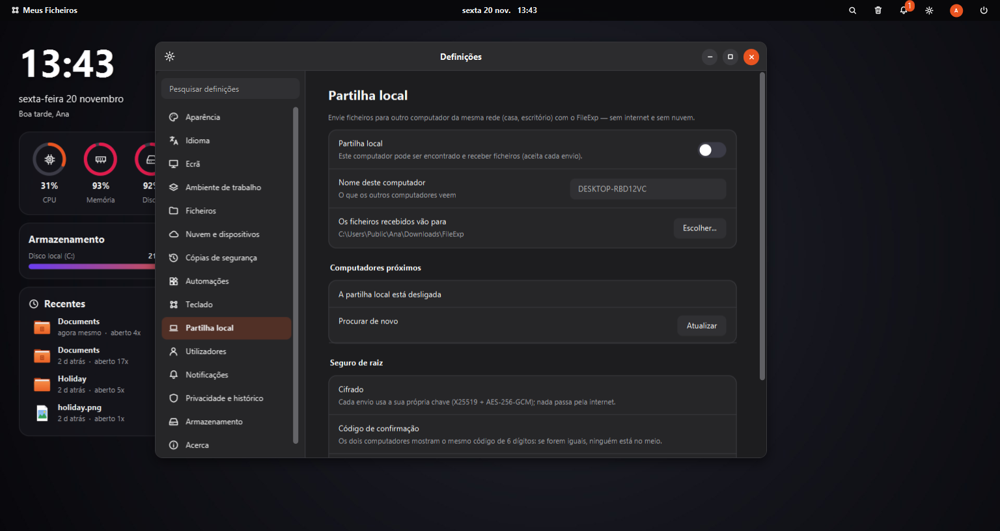
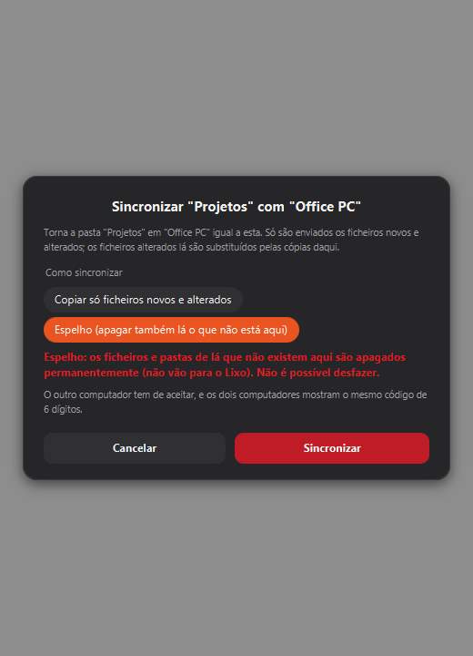
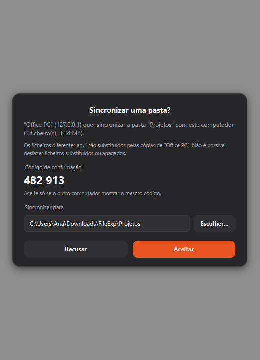

Partilha local
Envie ficheiros e pastas para outro computador com o FileExp na mesma rede — em casa, no escritório, numa sala de aula — sem internet, nuvem nem pen USB.

Ligar#
A partilha local está desligada por predefinição. Ligue-a em Definições › Partilha local nos dois computadores. Aí pode também escolher o nome que os outros veem e a pasta para onde vão os ficheiros recebidos (por predefinição Downloads/FileExp).
Enviar#
- Selecione ficheiros ou pastas.
- Clique com o botão direito › Enviar para e escolha o computador em Computadores próximos.
- Os dois ecrãs mostram o mesmo código de 6 dígitos. Se os códigos forem iguais, ninguém está no meio da ligação. Compare-os antes de aceitar: é o código que o protege.
Os dois computadores precisam do FileExp 3.9.0 ou mais recente. Um computador com um FileExp mais antigo continua a aparecer na lista, mas enviar para ele mostra "O outro computador tem uma versão antiga do FileExp" — atualize o FileExp nesse computador.
Receber#
O computador que recebe mostra quem está a enviar, o quê, e o código, e o utilizador aceita ou recusa. Sem resposta em 2 minutos, a transferência é recusada.
- Os nomes recebidos são limpos (sem
.., sem letras de unidade, sem nomes de dispositivos do Windows comoCON), para que quem envia não consiga escrever fora da pasta escolhida. - Os ficheiros têm de caber no espaço livre da pasta; caso contrário, a transferência para com uma mensagem clara.
- Nada é substituído: um nome que já exista passa a "foto (2).jpg".
- Tudo aparece na linha do tempo.
Sincronizar uma pasta (desde a 3.10)#
Deixe uma pasta do outro computador igual a uma pasta deste, enviando só os ficheiros que lá são novos ou estão alterados — da segunda vez, quase nada é enviado.
- No computador que recebe, ligue Definições › Partilha local › Permitir sincronizar pastas (desligado por omissão).
- No computador que envia, clique com o botão direito numa pasta › Sincronizar com e escolha o computador. Os computadores com um FileExp antigo, ou com a sincronização desligada, aparecem a cinzento.
- Escolha Copiar só ficheiros novos e alterados (por omissão) ou Espelho (apagar também lá o que não está aqui).

- O computador que recebe mostra quem sincroniza que pasta, o código e para onde vai (por omissão
<pasta dos ficheiros recebidos>/<nome da pasta>; Escolher… escolhe outra). Compare os códigos e carregue em Aceitar ou Recusar.

| Ficheiros alterados | Um ficheiro com o mesmo nome mas outro tamanho ou data é substituído pela cópia de quem envia. Não pode ser anulado. |
| Espelho | Os ficheiros e pastas que quem envia não tem são apagados definitivamente (não vão para o Lixo). Um espelho para um disco, para a pasta pessoal ou para Ambiente de trabalho/Documentos/Transferências/Imagens/Música/Vídeos é recusado. |
| Progresso | No painel de transferências dos dois computadores (pode cancelar); no fim, uma notificação diz quantos ficheiros são novos, atualizados, apagados e ignorados. |
| Linha do tempo | As alterações recebidas ficam registadas; quem envia regista a pasta como enviada. |
O envio e a receção normais não mudam, também com computadores que têm o FileExp 3.9.
Segurança#
| Descoberta | Difusão UDP na porta 47821, só enquanto a opção está ligada |
| Troca de chaves | X25519, uma chave nova para cada transferência; quem envia compromete-se com a sua chave (um hash) antes de ver a do outro, para que um computador no meio não consiga procurar chaves que deem o mesmo código |
| Cifra | AES-256-GCM com um contador de nonce em cada sentido |
| Confirmação | O mesmo código de 6 dígitos nos dois ecrãs (uma hipótese em um milhão para um atacante) |
| Limites | No máximo 4 ligações a chegar ao mesmo tempo; uma ligação em silêncio é fechada ao fim de 15 s |
Da primeira vez que a ligar, o Windows pode perguntar se o FileExp pode usar a rede. Permita-o apenas para redes privadas.